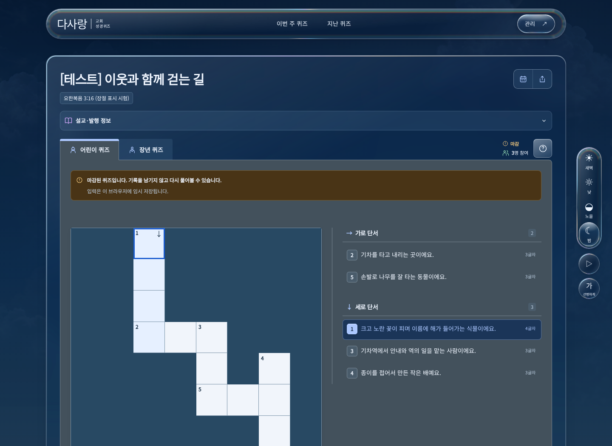
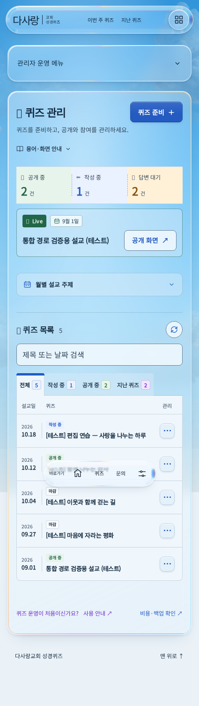
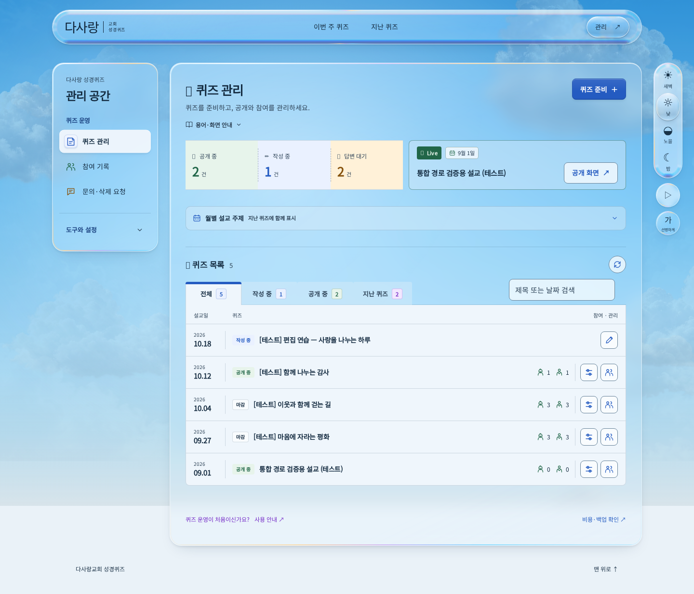

C안 적용 · 실제 화면 확인
헤더와 일반 페이지 본문은 같은 폭으로 가운데 정렬했습니다. 우측 설정 패널은 본문에서24px 떨어져 있으며, 700px 이하에서만 하단 설정 팝업으로 바뀝니다. 아래 사진은 CSS를 임시 주입하지 않고 현재 로컬 앱에서 촬영한 실제 화면입니다. 자료는 로컬 시연용입니다.
넓은 화면부터 모바일까지

1440 CSSpx · 사진을 누르면 원래 해상도로 열립니다.
메인은 전체 화면 하늘과 히어로·섹션 내부 구성을 유지하면서 헤더와 설정 패널의 공통 배치를 적용했습니다. 풀이·지난 퀴즈·관리의 외곽 본문은 헤더와 양끝이 일치합니다.
| 화면 | 헤더·본문 | 설정 패널 간격 | 가로 넘침 |
|---|
| 3440 / 2560px | 1376px | 24px | 0px |
| 1440px | 1224px | 24px | 0px |
| 1024px | 808px | 24px | 0px |
| 768px | 552px | 24px | 0px |
| 701px | 485px | 24px | 0px |
| 700px 이하 | 기존 모바일 여백 | 하단 팝업 | 0px |
320·375·425·700·701·768·1024·1440·2560·3440px × 메인·풀이·지난 퀴즈·관리의40상태를 확인했습니다. 이미지가 화면에 맞춰 축소되어 보이는 것은 실제 CSS 너비와 다릅니다. 측정 원본
모바일 관리 목록 · 네 시간대
행 오른쪽의 유리 더보기 버튼으로 전체 제목, 참여 인원, 편집·설정·참여 기록을 확인합니다. Live는 첫 줄에Live·달력 날짜, 둘째 줄에제목·공개 화면입니다. 제목이 길면 말줄임합니다.

전체 페이지 · 고정된 헤더/하단바는 촬영 당시 화면 위치에 표시됩니다.더보기 열림 · 전체 제목과 참여 인원, 작업 링크Live와 퀴즈 준비 버튼
‘공개 중·대표 지정’ 문구를 제거하고 날짜를 달력 모양의 작은 테두리 박스로 옮겼습니다. 퀴즈 준비 버튼은 시간대 행동색과 얕은 윗빛·그림자를 사용합니다.

위 시간대 버튼을 바꾸면 데스크톱 사진도 함께 바뀝니다.
퀴즈 준비가 채워진 화면을 여는 이유: 현재 기능은 새 퀴즈를 무조건 생성하는 버튼이 아닙니다. 작성 중인 초안이 있으면 그것을 이어서 열고, 없을 때 새 준비 화면을 엽니다. 실제 클릭으로 기존 로컬 초안에 이동하는 것을 확인했습니다. 기능은 바꾸지 않았습니다.
기존 초안이 열린 실제 화면
Chromium 실제 브라우저 화면과 Chromium·모바일 Chromium·Firefox 자동 동작 검수입니다. 실제 휴대폰·Safari 검수 완료를 뜻하지 않습니다. 원격 데이터·Preview 배포는 변경하지 않았습니다.